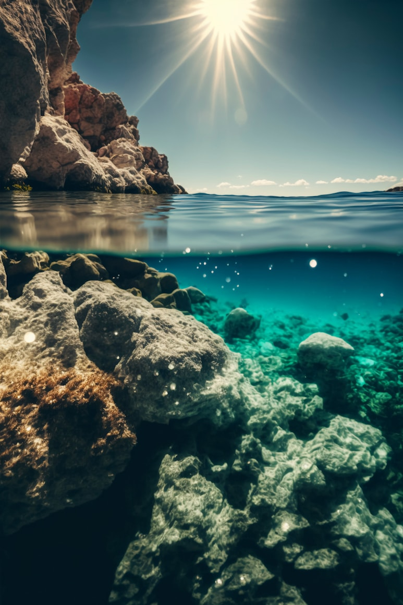

Real-Time Water Quality Monitoring: The Key to Cleaner Lakes & Rivers in India
Traditional water quality testing methods are slow, labor-intensive, and do not provide real-time data. This is where innovative solutions like Hydro—an advanced real-time water quality monitoring system—come into play.
